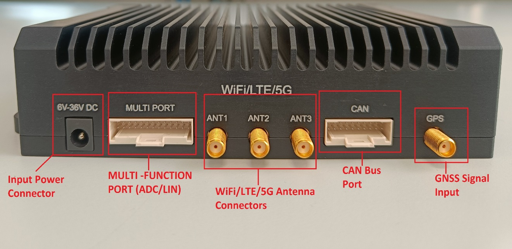
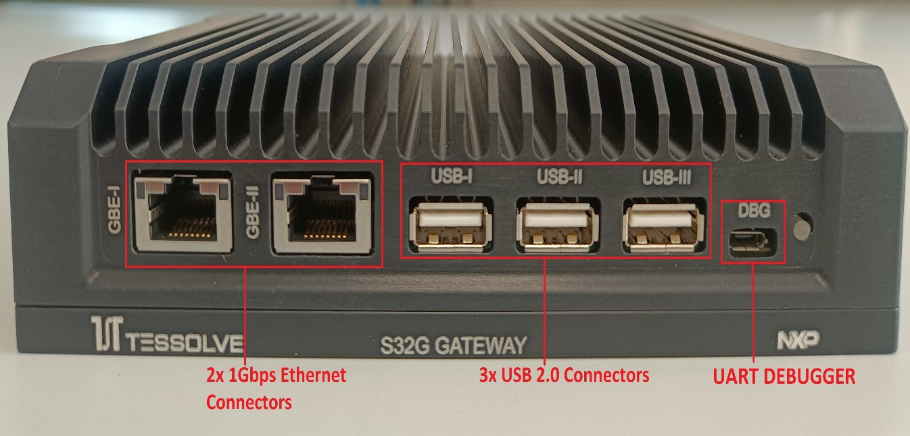
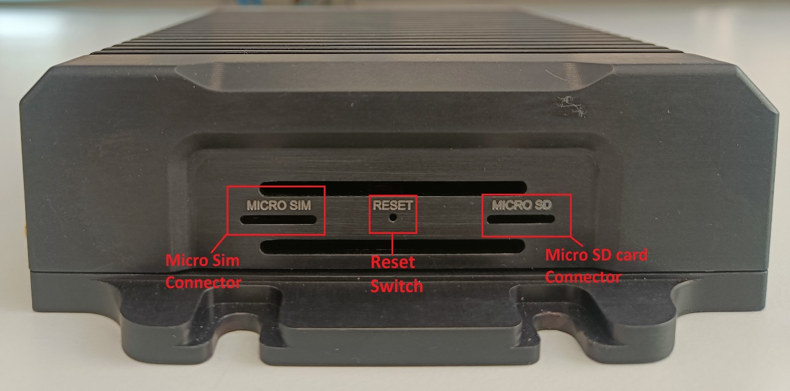
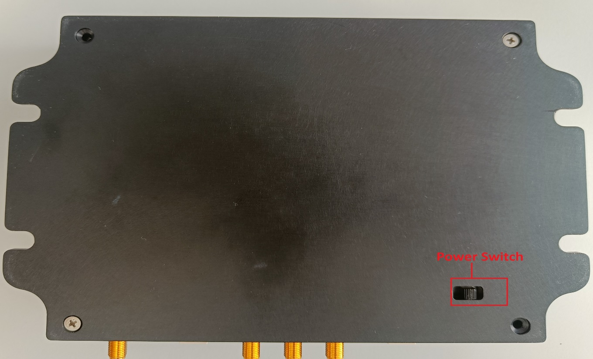
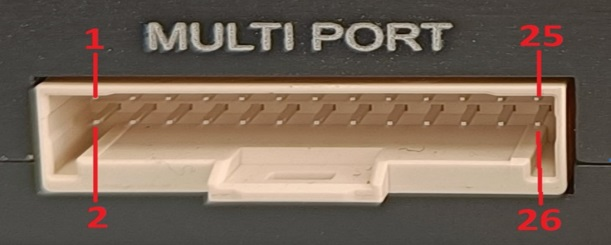
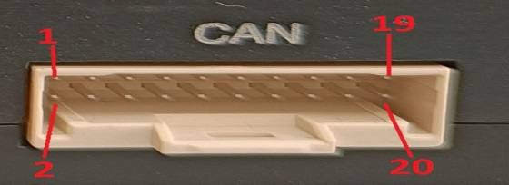
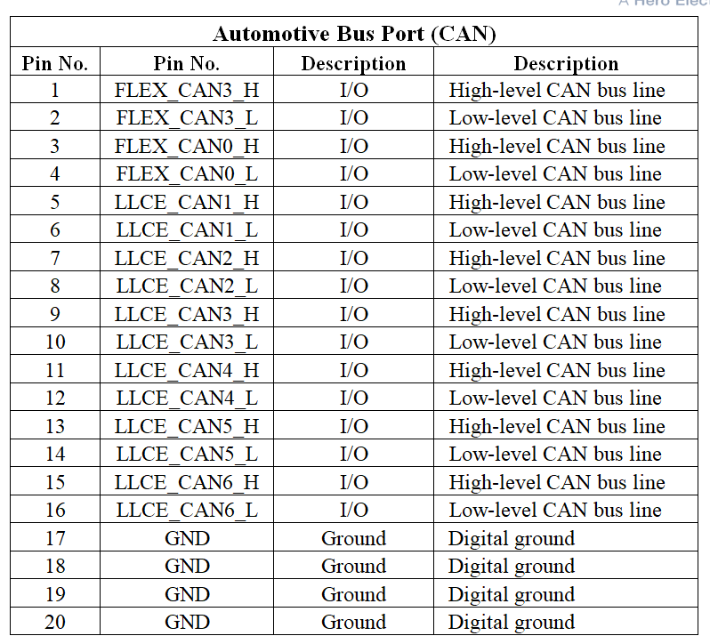

AWS IoT Greengrass on Terabox Gateway Installation Guide
The following guide details the installation procedure of AWS IoT Greengrass V2 Core software on Terabox Gateway.
1. Overview
TERABOX is based on NXP-S32G2 high-performance vehicle network processor that combine controller area network (CAN), local interconnect network (LIN), and FlexRay networking with high-data-rate Ethernet networking. It also combines a functional safe-core infrastructure with MPU cores and includes high-level security features.
Targeted applications for TERABOX are:
- service-oriented gateway
- vehicle central computing nodes,
- domain controller etc
1.1 About AWS IoT Greengrass
AWS IoT Greengrass is an open-source Internet of Things (IoT) edge runtime and cloud service that allows you to build, deploy and manage IoT applications on your devices. AWS IoT Greengrass is used to build software that enables your devices to act locally on the data that they generate, run predictions based on machine learning models, and filter and aggregate device data.
AWS IoT Greengrass enables your devices to collect and analyze data closer to where that data is generated, react autonomously to local events, and communicate securely with other devices on the local network. Greengrass devices can also communicate securely with AWS IoT Core and export IoT data to the AWS Cloud. You can use AWS IoT Greengrass to build edge applications using pre-built software modules, called components that can connect your edge devices to AWS services or third-party services. You can also use AWS IoT Greengrass to package and run your software using Lambda functions, Docker containers, native operating system processes, or custom runtimes of your choice.
To learn more about AWS IoT Greengrass, see how it works and what's new.
2.Hardware Description
2.1 Datasheet
Please find the link for datasheet below:
2.2 Standard Kit Contents
Below are the Kit contents:
- TERA Box
- LTE/5G Antenna
- WIFI Antenna
- GNSS Antenna
- Micro USB Cable
- LAN Cable
- Power with CAN Cable (OBD II)
- User Manual
- Power Adapter
2.3 Additional Hardware References
https://www.tessolve.com/tera/
3.Set up your Development Environment
3.1 Tools Installation (IDEs, Tool chains, SDKs)
TERAbox comes with pre-loaded software based on Yocto Linux. Below is detail on TERAbox SDK:
- TERA OS consideration: Yocto Linux for A53 App Core & RTOS for M7 Core
- Base Yocto BSP shall be downloaded from NXP for RDB2 platform, below reference
- NXP SDK will have all the required environment setup and toolchain to build Linux BSP for S32G2
- Tessolve downloads NXP S32G2 based software SDK from NXP portal provided for RDB2 platform
- Tessolve migrates/modify S32G2-RDB2 software for TERA box with TERA specific peripherals and drivers.
- Tessolve provides TERA SDK in the form of github patches to be merged and integrated on top NXP SDK for specific version.
-
Following are the major components of Tessolve TERA SDK
- TERA box specific Drivers
- Linux rootfs with various services and cloud
- Required environments support for rapid proto development: e.g., Python, OpenSSH, MQTT etc.
- APIs to access and control interfaces: IMU, LTE(4g/5g), WiFi/BT, EEPROM, GPS, CAN
- Test Applications to validate all the TERA interfaces.
NOTE: Please contact Tessolve Sales for more details at sales@tessolve.com
4. Set up your hardware.
This section provides instructions for setting up the TERABOX hardware.
4.1 Interface Connection Details
Figure 1: Tessolve Gateway External connectors 1
Figure 2: Tessolve Gateway External connectors 2
Figure 2: Tessolve Gateway External connectors 3
Figure 2: Tessolve Gateway External connectors 4
4.1.1 Input Power Connector:
- Power Input Jack (5.5mm OD connector) used to supply power to Gateway board.
- System support 6 to 36V DC power supply. Typical power supply to the board is 12V/3A DC.
4.1.2 Wi-Fi or 4G/5G Antenna SMA connectors:
- Three SMA connectors are used for connecting Wi-Fi or 4G/5G module antennas.
4.1.3 GNSS Antenna Connector:
- SMA connector for connect external GPS antenna.
4.1.4 Ethernet RJ45 Jacks:
- Two RJ45 connectors are provided for Ethernet connectivity.
- Both Ethernet ports support up to 1GbE transfer speed
4.1.5 USB Host Ports
- Three USB 2.0 Host ports are provided for connect external USB devices.
4.1.6 Debug UART
- Micro USB connector is provided to debug Gateway application board.
4.1.7 Status LED
- One dual colour Status LED is provided to indicate operation status of the system.
- One RED LED is provided to indicate Load ON/OFF.
4.1.7 Status LED
Multi-function port is used for optional power supply to the board and it supports power out for external boards. This Multi-function port support LIN, ADC, I2C and SPI hardware interfaces.
Figure 5: Multi-function Port connector pin outs
Multi-function connector pin outs as below:

Table 1 : multi-Function connector pin outs
4.1.9 CAN Bus Port
CAN port used for connecting external Flex and LLCE CAN bus ports. CAN port will support x2 FLEX CAN ports and x6 LLCE CAN ports.
Figure 6: CAN Bus Port connector pin outs
Table 2 : CAN Bus Port connector pin outs
4.1.10 SIM card
- SIM connector is provided for wireless communication through 4G/5G network
4.1.10 SIM card
- SIM connector is provided for wireless communication through 4G/5G network
4.1.11 SD Card
- MicroSD card connector is provided for external storage
- Micro SD card supports for system Boot and Storage purpose.
4.1.12 Reset switch
- Reset switch is provided in bottom side of the mechanical system for complete system reset.
4.1.13 Power ON/OFF switchh
- SPDT switch is provided to turn OFF the board and select the power Input from Power Jack and Multi Port connector.
5. Create Resources in AWS IoT
To create resources in AWS IoT, see Create AWS IoT Resources. To provision resources for your device, follow these steps:
6. Installing the AWS Command Line Interface
To install the AWS CLI on your host machine, refer to the instructions at Installing the AWS CLI v2. To complete the instructions in this document, you must first install the CLI.
After installing AWS CLI, configure it as per the instructions in the online guide. Set the appropriate values for Access key ID, Secret access key, and AWS Region. If you prefer, you can change the Output format to json.
7.Building a Linux image with Greengrass pre-requisites
7.1 Verify that Java is available.
- Power On
-
Once the system has booted, verify that java is available using the command:
- #: java --version.
8. Installing AWS IoT Greengrass on Terrabox Gateway
8.1 Downloading the AWS IoT Greengrass Core Software
If Greengrass is not included in the SD card image, you can download the most recent Greengrass core software here: AWA IoT Grengrass Core Software.
8.2 Prerequisites
The following prerequisites must be installed on the device before AWS Greengrass can be installed:
- Create an AWS account.
- To create, follow these steps Setup AWS Account.
-
AWS region which supports Greengrass V2.
For the list of supported regions, refer AWS IoT Greengrass V2 endpoints and quotas in the AWS General Reference.
- An AWS Identity and Access Management (IAM) User with Administrator privileges. Refer creating an IAM role.
- Terabox Gateway for installing Greengrass software.
- Python3.6 or greater version.
- Install AWS CLI as per the instructions in aws cli if not installed.
8.3 Creating an IAM Role
- Log in to the IAM console as the account owner by choosing Root user.
- Enter your AWS account email address.
- Enter your password on the next page.
- Choose Users > Add users in the navigation pane.
- Enter the desired name in the Username filed. For example, GreengrassProv.
- Select the check box next to Access Key Programmatic Access.
- Choose Next: Permissions.
- Choose Attach Existing Policies Directly under Set permissions.
- Filter the desired policies from the list.
-
Select following policies from the menu:
- IoT FullAccess
- S3 FullAccess
- Greengrass FullAccess
- IoT FullAccess
- Choose Next: Tags.
- Choose Next: Preview.
- Choose Create user.
- Download the AWS Security credentials from the next window
These credentials are required for setting up Greengrass core on the Terabox.
8.4 Installing the AWS IoT Greengrass Core software on Terabox.
The AWS IoT Greengrass Core can be installed on the Terabox using any of the following two methods:
- Installing Through AWS IAM Console
- Installing Through Terminal Commands
8.4.1 Installing Through AWS IAM Console
- Preparing the Terabox
- Create the default system user and group that runs components on your device.
sudo useradd --system --create-home ggc_user sudo groupadd --system ggc_group sudo usermod -aG docker idt_ggc_user sudo visudo root ALL=(ALL:ALL) ALL
- Create the default system user and group that runs components on your device.
- Provide AWS Credentials to Terabox
- Copy the ACCESS_KEY & SECURITY_ID from
csv
file downloaded from the Pre-requisites step and
export as
environment variables
export AWS_ACCESS_KEY_ID= "ACCESS-KEY" export AWS_SECRET_ACCESS_KEY= "SECURITY-ACCESS-KEY"
- Copy the ACCESS_KEY & SECURITY_ID from
csv
file downloaded from the Pre-requisites step and
export as
environment variables
- Setting up Environment for Greengrass
- Java runtime has to be installed on the Terabox to install Greengrass core SDK.
- SSH to Terabox and run the following command
sudo apt-get install default-jdk - This will install Latest version of Java runtime on to Terabox
- Installing Greengrass core in Terabox
- Sign in to the IAM console as the account owner by choosing Root user and entering your AWS account email address. On the next page, enter your password.
- Choose IoT Greengrass from the search menu
- Choose Setup One Core Device in the next page.
- Provide Core device name in Step-1 or keep the automatically generated name by AWS
- Provide Thing Group Name by creating a new group or assign to an existing group
- Select the Operating system. Terabox runs on Linux. So, select Linux.
-
Copy the curl command mentioned under Download the Installer section and run on Terabox
cd /opt/aws curl -s https://d2s8p88vqu9w66.cloudfront.net/releases/greengrass-nucleus-latest.zip > greengrass-nucleus-latest.zip && unzip greengrass-nucleus-latest.zip -d GreengrassInstaller -
Copy the installer command in Run the Installer section and execute on Terabox
cd /opt/aws sudo -E java -Droot="/opt/aws/greengrass/v2" \ -Dlog.store=FILE -jar ./GreengrassInstaller/lib/Greengrass.jar\ --aws-region us-east-1 \ --thing-name GreengrassQuickStartCore-183270afee6 \ --thing-group-name GreengrassQuickStartGroup \ --component-default-user ggc_user:ggc_group \ --provision true \ --setup-system-service true \ --deploy-dev-tools true - This will take sometime to install AWS IoT Greengrass Core software on Terabox
- Verifying the Installation
- Once the greengrass core software is installed successfully, it will create a systemd service.
- To check the status of the service
- To view the log messages of the AWS IoT Greengrass Core software
sudo service greengrass statussudo journalctl -u greengrass.service -f
8.4.2 Installing Through Terminal Commands
- Follow Steps 1,2,3 mentioned in Installing Through AWS IAM Console for installing the dependencies and setting up the environment
- Exceute the following command which will download the Greengrass into Terabox
- Execute the following command which will install the Greengrass into Terabox
- Repeat Step 5 from Installing Through AWS IAM Console for verifying the installation & checking the logs.
cd /opt/aws
curl -s https://d2s8p88vqu9w66.cloudfront.net/releases/greengrass-nucleus-latest.zip > greengrass-nucleus-latest.zip && unzip greengrass-nucleus-latest.zip -d GreengrassInstaller
cd /opt/aws
sudo -E java -Droot="/opt/aws/greengrass/v2" \
-Dlog.store=FILE -jar ./GreengrassInstaller/lib/Greengrass.jar\
--aws-region us-east-1 \
--thing-name GreengrassQuickStartCore-183270afee6 \
--thing-group-name GreengrassQuickStartGroup \
--component-default-user ggc_user:ggc_group \
--provision true \
--setup-system-service true \
--deploy-dev-tools true